In 2018, I was frustrated by my RYM profile. A teenage indulgence in contrarianism had its fingerprints all over the page, to the point where showing others felt embarrassing. Deep dives into jazz and electronic music from my years playing music at my college radio station had also estranged be from my roots in rock and hip-hop, and the profile didn't feel representative of me any longer. That summer, I hit the nuke button on the account and started fresh.
Unlike last time, this batch is recent enough that I can personally attest to still believing it today - each of these albums can be found in the music index with attribution linking back to this page. This compilation isn't comprehensive, as many listens prompted only some track ratings and average score. If you want to look through the full second profile (253 albums rated, some duplicates from the first account), you can visit it here.
Donald Byrd - Places and Spaces (1975) - ★★★☆
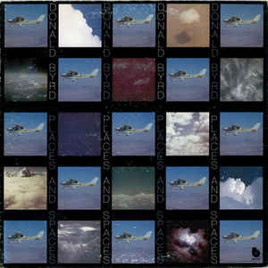Places and Spaces is one of the purest exclamations of positivity I've found in music. Everything about it is built to put a smile on your face: airy strings, joyful horn playing from the man himself, beautifully emotive vocal performances, and exuberant lyrics that place an emphasis on love and relaxation.
It sounds like how a windy summer afternoon feels.
July 26, 2018
Sade - Love Deluxe (1992) - ★★★½
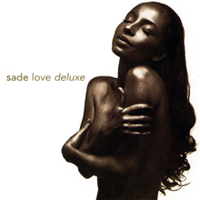The first time I heard this album, I was reading a review of it that called it timeless music. I couldn't really understand what it meant at the time, but revisits to Love Deluxe over the years have been so profound and relevant for me, even in 2018, that even I have started to understand what "timeless" meant for a piece of musical art. This album was recorded in 1992 but if it released in any of the years between then and now it would still have been bleeding edge compared to its peers in pop music.
Sade has always had an effortless air about her. Her voice is strong and powerful, with a fantastic sultry tone, but she wields it like a samurai wields a blade: it's only as necessary. Her ability to capture the attention of the listener is in strong part because of this restraint, not in spite of it. Vocalists from now until the end of time could learn something from that.
The real star of Love Deluxe is the outstanding production on every single track. It's ethereal, organic, and even in moments of tension or energy it feels delicate. I can't imagine a better complement to the unique musical instrument of Sade herself. The band took influences from the budding (and that's putting it lightly) trip-hop scene, hip-hop breakbeat culture, the 80s ambient emergence, and jazz fusion tones of choice from the infamous explosive jazz fusion. The basslines are fat as fuck, the synths are airy and beautiful, the percussion is steady, and everything surrounds a central idea of this transcendent UFO pop music. It is right in line with the space-age revival scene that Stereolab was a part of in the late 90s. Again, this thing was built in 1992.
Love Deluxe is not only ahead of the stylistic curve of 1992, but respectful of well over twenty years of musical developments prior, willing to take Sade's sound in completely uncharted territory, and still sounds fresh today. Sounds timeless to me.
July 26, 2018
Miles Davis - In a Silent Way (1969) - ★★★★
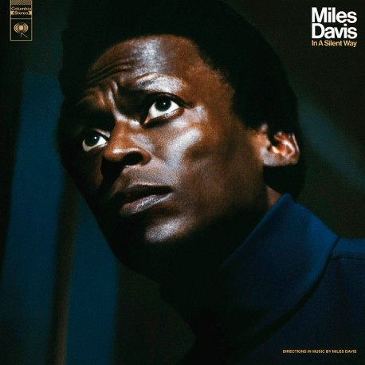I do not how a single person could see this album's roster and not immediately buy the record. Given the solo works of all of the guest contributors, I also would not blame anyone for expecting a well-orchestrated explosion of dismantled standards along the same lines as many early Davis fusion records - what we got is something else altogether.
This is a twinkling, abstract jam with the greatest trumpeter, drummer, jazz guitarist, and keyboardists (plural!) to ever live. The closest thing you get to standing out is the very seldom solos from Davis, Shorter and McLaughlin, which hang in the air more like a dancing fairy in Fantasia than a commanding, show-centering act. The rest of the project is built in the shadows, building... always building, even if it excludes you from the spotlight. The 40-minute affair doesn't even get audibly loud until minute 31, after which it retreats into slumber in minute 32.
In a Silent Way is an unstoked fire that catches an occasional breeze and flickers to life. The very notion that it aimed to be much more (and much less, quantitatively) than the sum of its parts is an executive decision that is close to once-in-a-lifetime. For that, we celebrate.
July 26, 2018
Bailter Space - Robot World (1993) - ★★½☆
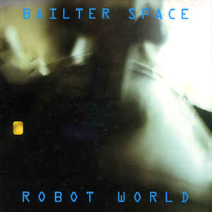I know people usually use the term "MBV worship" in the shoegaze scene to cause offense towards artists, but in this case I think it's both applicable and a worthy compliment.
I wouldn't be surprised if the Robot World sessions were recorded in a grungey, candlelit basement next to a wall of guitar pedals and a depraved shrine to Belinda Butcher and Kevin Shields. This thing is filthy, thick, and droning, and its impression of its inspirations is admirable.
July 27, 2018
Jay Electronica - Act 1: Eternal Sunshine (2007) - ★★★½
The enigmatic Jay Electronica's mystic, atmospheric, and occasionally sinister 15-minute EP rattled me more than many hip-hop projects three times as long ever could. Lifting samples from the film of the same name, Act 1 has zero tracks with percussion, and yet Elec's cadence proves they aren't necessary.
Believe the hype: In under 8 minutes of actual musical content (disregarding the skit intro, which you shouldn't - it's unadulterated praise from Erykah Badu), this is one of the great lyrical performances of the 21st century.
July 27, 2018
Alice Coltrane - Journey in Satchidananda (1971) - ★★★☆
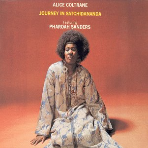Absolutely gorgeous record, swathing harp playing by Alice Coltrane conjuring a firmly psychedelic, dissociative atmosphere. Pharoah Sanders provides some horn and he kills it, soaring through these landscapes with intent and poise.
This is not only one of Alice Coltrane's most accessible albums but also a stark opposition to the difficult, noisy technicality of most of her works. It sometimes suffers from Lanquidity Syndrome where it plays it a bit too safe, holding back from creating a demanding work that is also a tone piece instead of just the latter, but I find it extremely hard to believe anyone would not enjoy this record.
July 27, 2018
Art Blakey and the Jazz Messengers - Moanin’ (1959) - ★★★½

A ground zero for some of the most legendary standards of all time. The playing is across-the-board outstanding, especially the man of the hour, Art Blakey, and pianist Bobby Timmons. The compositions are ingeniously curated and given to immensely capable hands.
It's sultry, it's hot, it's energetic, it's restrained... it's a classic. Legendary session.
July 27, 2018
Slint - Spiderland (1991) - ★★★½
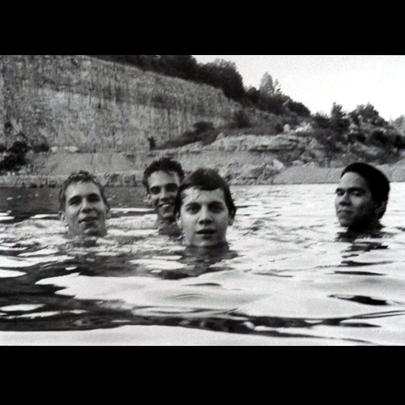A incredibly pulsating mess that acts out on its angst at times, and chooses to instead brood at others. Starts off with an absolute ripper of a track in "Breadcrumb Trail" and then descends into mostly-instrumental madness before closing on a beautifully high note in "Good Morning, Captain".
I feel like this is an album that needs words about it less than it needs willing ears.
August 14, 2018
Playboi Carti - Playboi Carti (2017) - ★★★☆
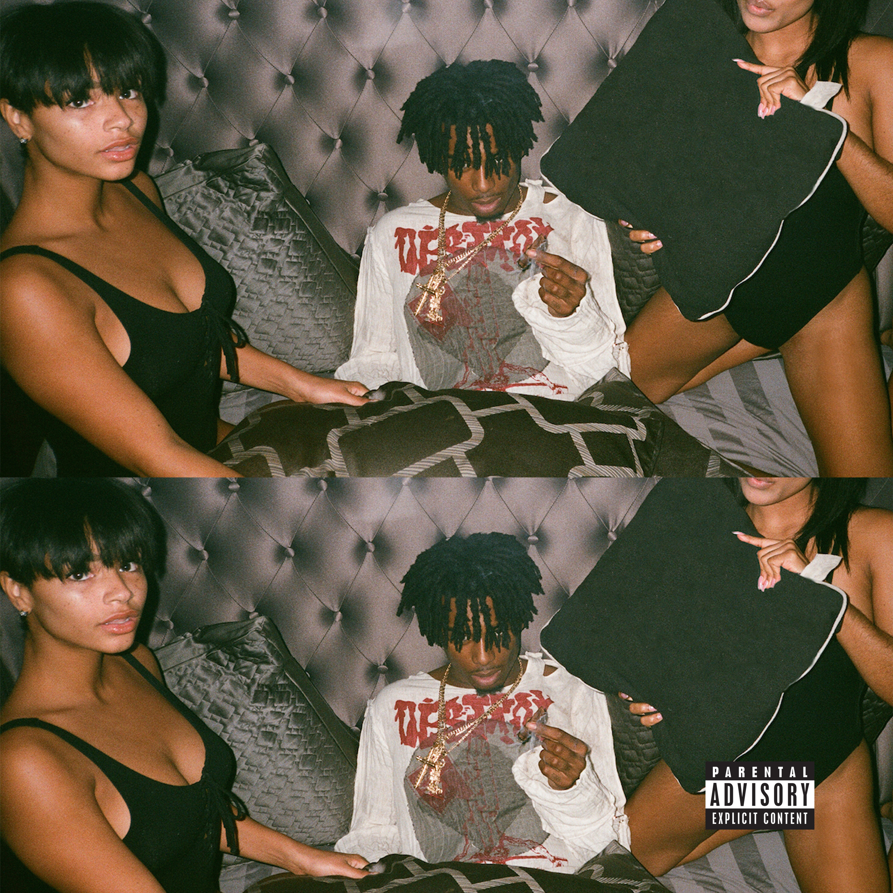I can’t believe how much I return to this project. Its appeal totally escaped me outside of the singles when it dropped and just over a year later I’m lamenting that Die Lit doesn’t recapture the essence of Carti’s debut. This thing is addictively weird.
Just to get this out of the way - this is just as abstract as any hip hop record you might have heard. Carti is completely illegible on more than a couple occasions, instead directing focus to his pretty great cadence and delivery. I’m not even sure if the lyrics are genuine or just a vessel for the song as a whole. I know this sounds like too much praise for a popular trap record, but I really am starting to think of Carti as totally deconstructive of his peers.
The star of Playboi Carti is the production, as everyone else has mentioned. It’s approaching ambient trap, with lush and spacy textures, lighter emphasis on traditional percussion, and synth packs that remind me of Bomberman and Mega Man games circa N64-era. It’s infectious, complex, and the comparisons to Clams Casino are apt. The beats are sleepwalk visions, which is so much more fitting to Carti’s lethargy than the increasingly heavier instrumentals becoming popular in this scene in 2018.
This is going to be lost on most people who take music at face value - a technique I am certainly not condemning! - but Carti’s deconstruction and experimentation of 2017 trap tropes brings them closer to the essence of the genre’s appeal than more lyrical or energetic efforts. It’s kind of effortless, but he and Pierre put on a show, and it’s one of a kind.
August 23, 2018
Thundercat - The Golden Age of Apocalypse (2011) - ★★☆☆
This dude is clearly a virtuous bass player, and has exceptionally good taste for improvisation, but I really can't say the same about his vocal performances or his songwriting in general. I'd rather just hear him play, and my favorites on the album reflect that.
A lot of the tracks shoot themselves in the foot for no reason, like "Boat Cruise" that neuters a funky Rhodes jam with an awful panning synth pad that sounds like the worst of Chicago House. "Is It Love?" and "Walkin'" feature some truly awful vocal performances as well that really take away from how polished everything else feels.
Still a promising debut with a couple jams, but it's clear that Thundercat's current problems - cutting through aesthetic filler to get the actual core of his songs - are ones he's always had.
November 10, 2018
Theo Parrish - Parallel Dimensions (2000) - ★★½☆
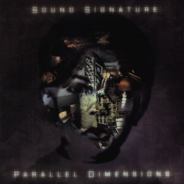A dreamy, swirling house record with a dark side. The rhythm is pulsing but the rest of the focus is on ambience, which feels hazy - like you've briefly lost your friends at a club and are becoming slowly less interested in finding them again.
I personally haven't been to any club where it feels like one of these tracks would get played, but I'm now interested in finding one. That kind of dissociation feels like it could be therapeutic.
November 16, 2018
C418 - Minecraft: Volume Alpha (2011) - ★★½☆
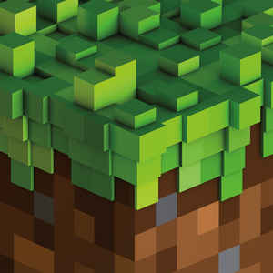Is it kind of amateurish? Sure. Does much of it feel indistinguishable from one another? Definitely, even going past the major motifs. Is it difficult to discuss on its own merits because of its eternal tether to one of the most influential games ever made? Unquestionably, yes.
Despite it all, C418 has managed to create something genuinely charming and uplifting, through tasteful synth choices, good use of ambience and negative space, and some powerful, albeit simple melodies. Its biggest flaw is a preoccupation with not overwhelming the player, despite the game’s massive voxel-space begging for something to fill the void.
March 10, 2020
Bruno Pernadas - Those Who Throw Objects… (2016) - ★½☆☆
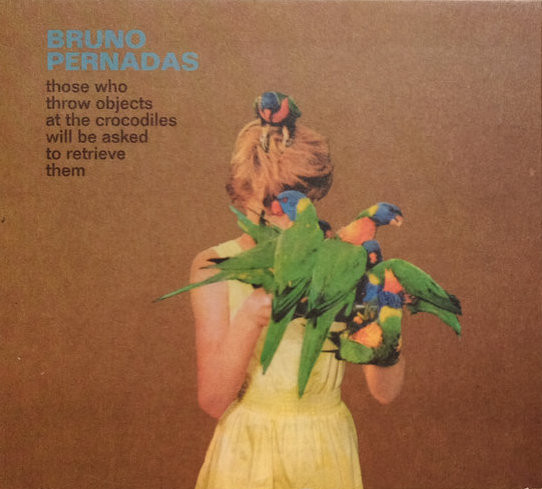Those Who Throw Objects… is loud but terminally sleepy. Its undercooked compositions, saccharine saxes and guitars, grating vocals and lyrics, and haphazard assembly of its would-be “epic” moments obscure flashes of strong musicianship and an ear for arrangement. Its obsession with the 1990s’ exotica-laced space-age pop revivalism seems misinformed, missing the mystery, darkness and moments of quiet that made the movement so compelling, instead filling that void with theatrical kitsch and the driest of 2010s indie rock.
Its best moments invoke Stereolab, Cortex, and Broadcast, but reduced to a mere beauty. You can tell it’s only pretending to be fun.
March 15, 2020
Pram - The Stars Are So Big… (1993) - ★★★½
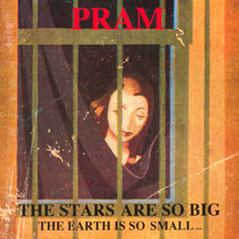Pram’s outstanding debut forgoes technical mastery for a fragile beauty. Cuckston’s vocals are disharmonious, and the choice of instruments is makeshift. The end result is raw, sloppy, and a little frightening, but underneath is pure familial warmth, a homemade meal cobbled together from scraps.
The brilliant "The Ray" fully realizes this, burying a toy synth and lullaby vocals beneath field recordings of a howling blizzard, evoking the image of something barely alive out in the cold death. There's something captivating about walking that line between comfortand discomfort, about making your home in a dangerous place, and Pram captures it perfectly.
March 15, 2020
múm - Finally We Are No One (2002) - ★★½☆
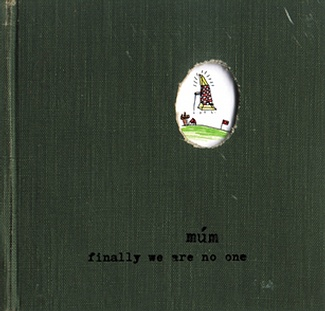Finally... is the musical equivalent of tilt shifting. Every moving part feels tiny and delicate - mechanical clicking, organic bubbling, and glittering synths dot the canvas. Unfortunately, the compositions in the shorter tracks are so fragile that múm refuse to do much melodic work at all, they just set up the camera and let it run. All setting shots, no subject... even if the setting is compelling.
The longer tracks suffer from a separate issue: Icelandic artists in 2002 couldn’t outrun Sigur Ros’s shadow, and their post-rock crescendos creep into compositions where they aren’t welcome. Múm is more interesting in miniature.
March 16, 2020
Sweet Trip - Halica: Bliss Out v.11 (1998) - ★★★☆
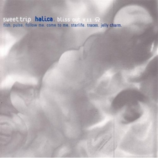Halica poses the question: what if heaven was inside a computer? That runs Windows 95?
Sweet Trip’s debut incorporates most cool musical ideas of the 1990s - huge walls of sound, dreamy male-female vocal duets, guitars drowned in reverb, textural analog electronics, polyrhythmic IDM clicking and clacking, sweeping synth pads, and fat techno basslines - and pulls it together effortlessly, as though the ideas were never disparate to begin with. Even in its then-trendiness, it can be seen as something of a Rosetta Stone moment, translating the analog and digital music worlds for one another. It’s just got more sound than content.
March 16, 2020
Watchman - Lotusize (2009) - ★★★☆
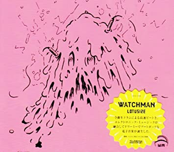Lotusize is a choppier, glitchier take on cutesy Japanatronica, surrounding delicate toy synths with rough and tumble jungle rhythms, chunky Warp Records basslines, and euphoric electric fusion crescendos. The stop-and-start, staccato nature of most tracks can be exhausting in their bliss, like being beaten with a pillow. Lotusize is forward-thinking without fully divorcing itself from its present - it paves the road for producers like Lone, Iglooghost, and Machine Girl one track, and flashes bright, vocoded emo-pop vocals the next. Watchman deserves his flowers as a visionary, who (like 0PN) was making internet music before we even understood what that meant.
March 17, 2020
Junior Varsity KM - Taking Care of You (1998) - ★★½☆
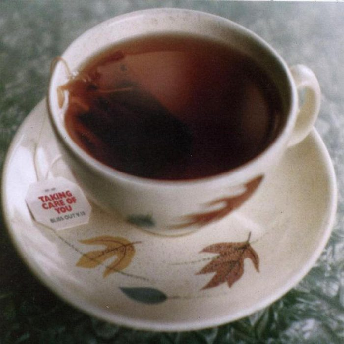This is like a bundle of joy, probably the gentlest little mini-DnB project I've ever heard. JVKM made breakbeats feel like a blanket through tasteful pad synths that envelop the scene. If anything I feel like he didn't lean far enough into the pillow zone - songs like "The Injury" start like lullabies and become gradually less comforting as the track goes on and more variations on the theme occur. It's sort of a bummer and it helps explain why no tracks really take that leap into greatness. Kind of goes hand in hand with the lengthy runtimes of the songs here.
Also, "Fourshadowing" samples MBV's "To Here Knows When," so that in and of itself is pretty noteworthy. It doesn't totally work, but stuff like that shows the guy is overtly weird enough to be charming through his music.
March 17, 2020
Seefeel - Quique (1993) - ★½☆☆
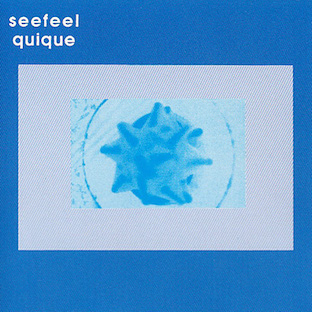Seefeel's fatal error is perceiving the bountiful entirety of the musical world of 1993 through a narrow and stuffy lens. You can tell he is interested in the world, the dream pop and shoegaze scenes, how IDM producers were pushing rhythmic boambient undaries, and particularly the intersection of these movements, but his only idea to materialize his inspirations was to turn them into techno.
The result is a square peg crammed through a circular hole, its corners shaven down and nothing of any real use remaining. "Imperial" stands tall among the mess, an unfortunate casualty of an indecisive, dull project.
March 17, 2020
Sufjan Stevens - Enjoy Your Rabbit (2001) - ★★★☆
Enjoy Your Rabbit sounds like a distinctly Sufjan project - picturesque arrangements, baroque instrumentation, and a sense of modest restraint - but digitally corrupting in real time. Harsh glitches and scratches dot the album’s length, but it's not harsh in its totality - there are real moments of fluttery joy that resolve the tension of the noise.
The project has grown a reputation as a black sheep in Stevens’ catalog, but this is something I’ve found fairly flimsy. It is not totally alienated from Sufjan's later work, nor is it a malicious experiment for its own sake. Some envelopes are better off pushed.
March 17, 2020
Underworld - Born Slippy .NUXX (1996) - ★★★☆
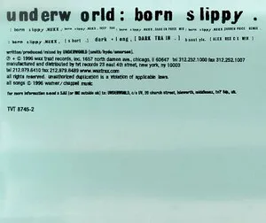The original Born Slippy .NUXX is clearly tapping into something sort of cosmic at its start, but for me anyway it always felt a little too ravey, my interest waning as the melody drops for the pulsing drums. To my surprise though, the various remixes here are outstanding and really give the single some variety and depth.
The Darren Price Mix (not his Remix, though that's also nice) stands out as especially fantastic, incorporating the soul of the OG track into something much more digestible to my softer palette, not only keeping the melody throughout but ramping up the euphoria. Very much recommended as a complete work to really capture the transformation of NUXX as it inspired contemporaries and was ported to other scenes.
November 22, 2020
Namco Sound Team - R4 / Direct Audio (1999) - ★★½☆
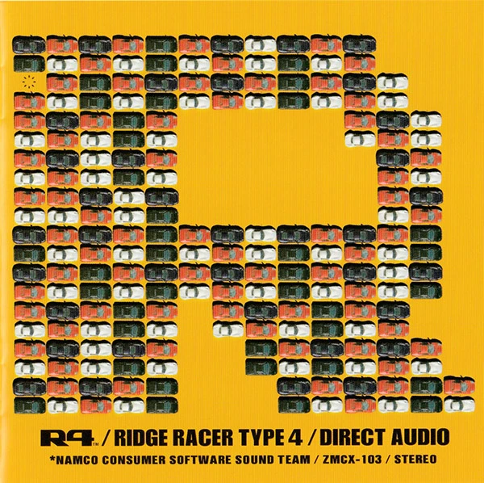We've hit full circle already over the first (and second, and third) wave of "revival" scenes in games. In the early 2000s, freeware devs relentlessly remixed NES titles and revived the 8-bit. In the 2010s, we've seen stabs at deliberate recreation of titles from the 16-bit era all the way through to the earliest 3D home consoles, in all their low-res glory.
This sort of recursive exploration of games in smaller scenes that coexists with the natural direct progression in the larger ones is a really beautiful thing, but there is something missing that unfortunately cannot be remedied barring major industry intervention - without these old-school titles getting the full AAA treatment, they will never sound like this. You might be able to get it to look and play like R4, but unless you've got an unlimited music budget you're not touching this. It's the one hurdle indie games have never been able to handle. Anything past chiptune or 5th-gen horror-synth is just too difficult to properly emulate for smaller teams. Unless these PS1 revival games start making a killing, in order to get your game to sound like this, you just had to be there.
This phenomenon leaves R4 in a cool place, where it's obviously super dated and glorious, revered by all fans old and new, and yet unable to be recreated. Although it and other knockout VGM soundtracks of the age (Ape Escape, Bomberman Hero, WipeOut, etc) tend to be a little... much for me, even my ear for the corny dance house vocals and disco strings and soaking wet Rhodes lines, it's still hard for me not to recommend this one. You might have to take it down in smaller doses, but it's such a rush.
November 23, 2020
Aphex Twin - Richard D. James Album (1996) - ★★★½
A common perception of Aphex Twin and his early-90s Warp contemporaries was that of misanthropes, pushing boundaries in abrasive, inhuman musical spaces. Some artists, Aphex included, leaned into the fear and misunderstanding that their work conjured in listeners, but this branding also ultimately obscured the heart in the machine. RDJA is a shockingly sincere, introspective project, with no big scares befitting of the album cover.
Even within Aphex’s typically frenetic language of expression, the bright synths, bitsy pitters and patters, and wonderfully tacky MIDI instruments are knitted together in a convincingly tender way. The result: a low-resolution, heavily artifacted self-portrait.
November 23, 2020
Squarepusher - Feed Me Weird Things (1996) - ★★★☆
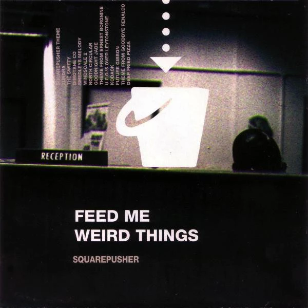Tom Jenkinson’s debut as Squarepusher is wonderfully weird - it’s playful, rambunctious, easily distracted. Crucially, it also boasts a great sense of self-deprecating humor, showcasing its own absurdity.
“Smedley's Melody” is the best example possible: what starts as a kitschy little digital jam sesh gets hijacked by an spasmodic blitz of a breakbeat, kicking up the room and making everyone feel just a little uncomfortable. It sounds like a socially inept MPC trying to learn how to talk to the other instruments, and it's the perfect metaphor for how Squarepusher tries to reconcile his jazz upbringing with his rapid-fire beat obsession.
November 25, 2020